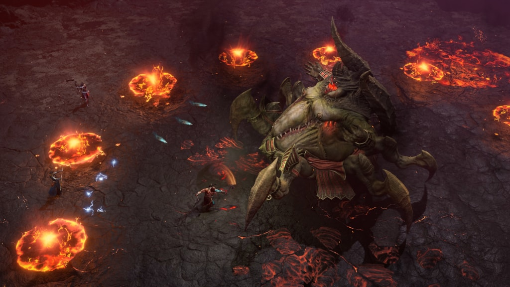

← Back
Azmodan, Lord of Sin
- Shipped the first new world boss since the launch of Diablo 4.
- Successfully imported the Azmodan rig and several animations from Diablo 3.
- Updated and modernized the encounter to meet Diablo 4’s combat and readability standards.
- Preserved the iconic Diablo 3 identity while elevating the fight for D4’s open‑world format.
